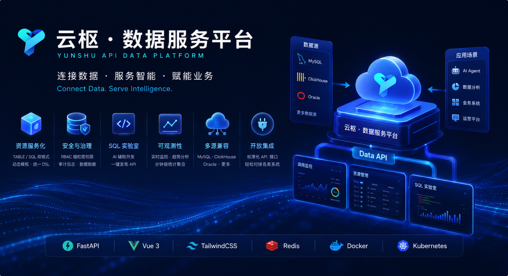
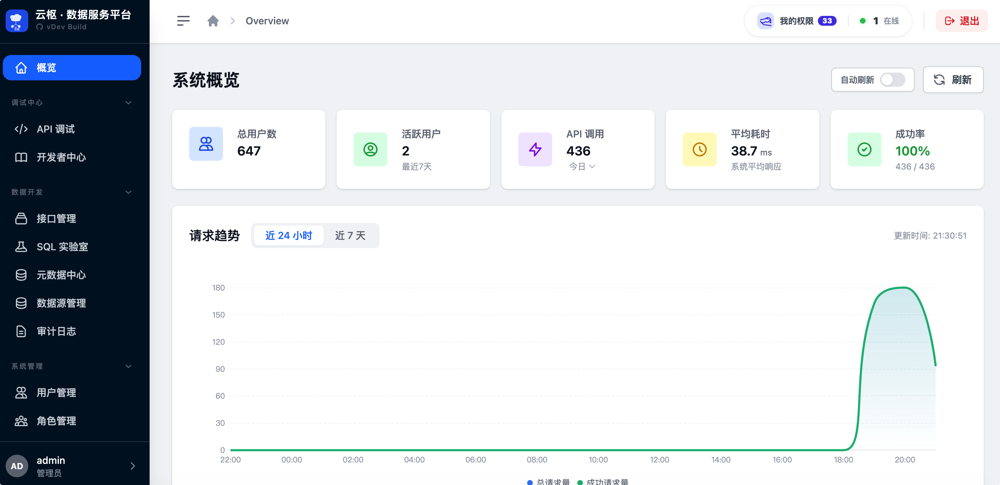
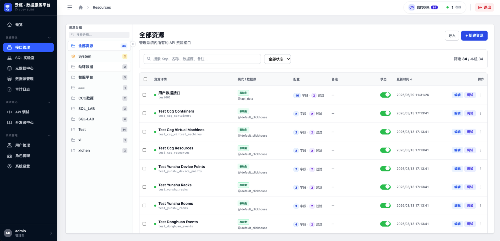
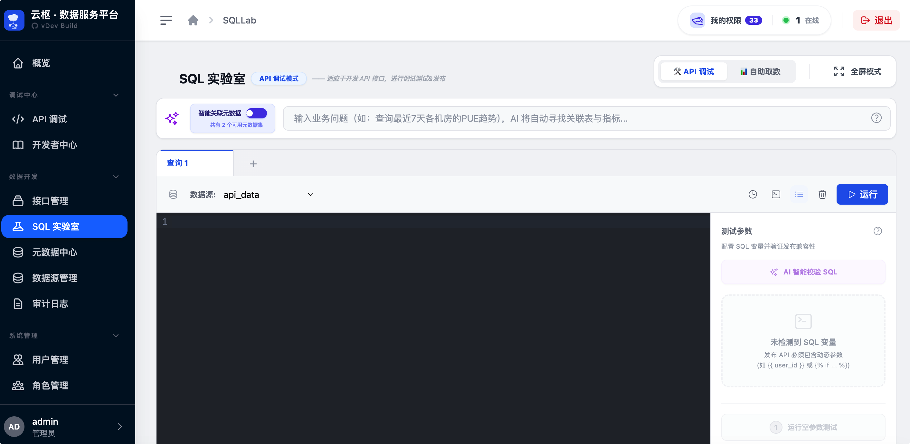
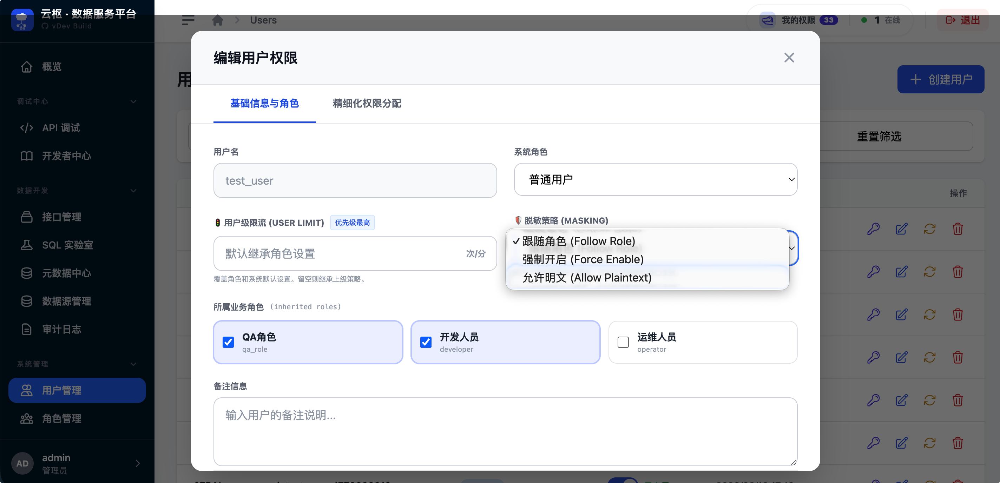
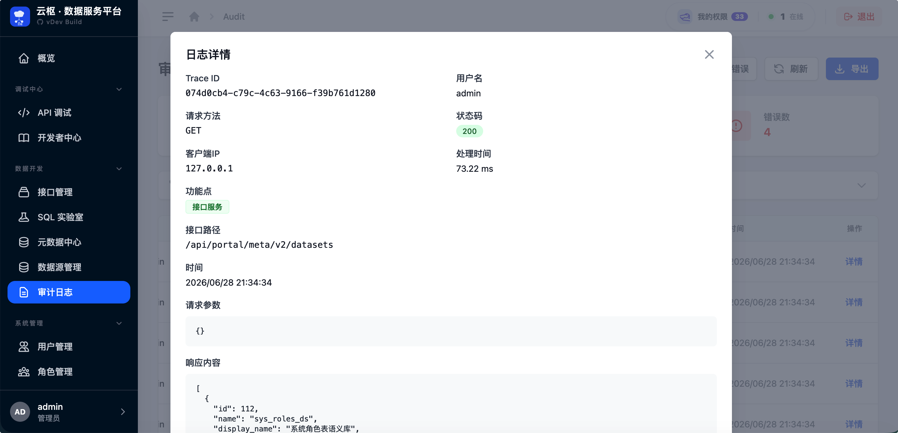

🚀 云枢数据服务平台 · v1.0.0 正式发布
Data API · 元数据治理 · SQL 实验室 · 企业级审计
GitHub Repository： RandyChen1985/yunshu-api-data-platform
生态互补： 云枢 · 智能体平台（AI 对话 / Agent 编排 / ChatBI）
v1.0.0 是云枢数据服务平台的首个正式开源版本，面向企业数据消费场景提供一站式 Data-as-a-Service (DaaS) 能力。平台将物理表、自定义 SQL 与语义元数据统一封装为可治理、可审计、可观测的 RESTful API，可作为云枢 · 智能体平台的标准化数据底座，为 ChatBI、AI Agent 与业务系统提供统一数据访问层。
本次首发完整交付：FastAPI 核心后端、Vue 3 + TailwindCSS 管理后台、25 套数据库迁移脚本、Docker 离线部署工具链、双语 README 与 6 张功能界面截屏。
发布范围自 73a1324（含）至
43849b7，共
10 个提交，涵盖核心后端、前端管理台、数据库迁移、Docker 离线部署与完整开源文档资产。

✨ 平台能力矩阵速览
🚀 动态资源服务化 · 🧪 SQL 实验室 · 🗂️ 元数据治理
🛡️ RBAC 细粒度授权 · 📋 按天分表审计 · 🔐 API Key 双认证
📊 全链路可观测看板 · 🔌 标准化 /api/v1 开放接口 · 🐳 Docker 离线部署
🔄 典型数据消费流程
① 注册数据源：在管理后台配置 MySQL / ClickHouse / Oracle 连接。
② 定义资源：通过表映射或 SQL 实验室创建 API 资源条目。
③ 授权发布：为角色/用户分配资源访问权限，生成 API Key。
④ 对外调用：客户端携带 X-API-Key 调用 /api/v1/query 或资源直连接口。
⑤ 审计回溯：所有调用写入按天分表日志，支持 Trace ID 排障。
🚀 Key Features
01 🚀 动态资源服务化 (Resource-as-an-API)
● 双模式引擎：TABLE 零代码映射物理表；SQL 封装复杂逻辑，支持 Jinja2 动态模板条件分支。
● 统一查询 DSL：/api/v1/query 与 /api/v1/resources/{key} 支持 EQ / IN / LIKE / 范围比较与分页排序。
● 资源生命周期：状态映射、缓存 TTL、Key 长度扩展与细粒度发布管控。
02 🧪 AI 驱动的 SQL 实验室 (SQL Lab)
● 智能 SQL 辅助：LLM 生成、语法纠错、字段中文标签补全，支持流式对话式分析。
● 安全预览与执行：sqlparse 静态分析拦截 DELETE/DROP 等高危操作，强制 LIMIT；支持 Oracle / ClickHouse / MySQL 多源预览。
● 一键发布：调试通过的 SQL 即时发布为受 RBAC 管控的 API 资源。
03 🗂️ 元数据与多源数据源治理
● 多源连接池：统一管理 MySQL、ClickHouse、Oracle，支持连接测试、拖拽排序与角色隔离。
● 语义元数据 V2：数据集、表、字段、指标与实体关系结构化建模；AI 智能发现指标、YAML 生成与血缘分析。
● 健康度治理：元数据健康评分、创建人追踪、向量同步状态与权限模拟器。
04 🛡️ 企业级安全、审计与 RBAC
● 细粒度 RBAC：权限精确到数据源、物理表、API 资源点与 UI 元素；角色成员批量分配与缓存失效。
● 全链路审计：api_access_logs_YYYYMMDD 按天分表，支持 Trace ID、高级过滤与导出。
● 数据脱敏：全局 / 角色 / 用户级脱敏策略，字段规则可配置。
● 双认证体系：API Key + Session 双通道；个人 API Key 管理与限流配置。
05 📊 全链路可观测性与运维
● 实时看板：24h/7d 调用趋势、Top 接口/用户、在线用户统计与最近活动。
● 分钟级聚合：APScheduler 异步汇总 api_access_stats_1m，看板秒开。
● 连接池监控：各数据源连接池活跃度与健康状态可视化；系统资源监控（CPU/内存/磁盘/Redis）。
06 🔌 开放集成与生态互补
● 标准化对外 API：/api/v1 公开接口与管理后台 Portal API，配套
API 集成指南。
● 智能体平台对接：作为云枢 AI 智能体平台 Data API 与元数据治理层，为 ChatBI / Agent 提供标准化数据访问。
● Oracle 专项支持：Thin / Thick 双驱动适配，详见 Oracle 集成指南。
07 📄 文档与开源资产
● 双语 README：中英文文档，含系统架构图、核心能力全景图与 6 张管理后台界面截屏。
● 部署指南： HOW_TO_INSTALL.md 覆盖 Docker 离线部署与本地开发联调。
● 一键开发脚本：dev.sh 自动编译前端、释放端口并以 --reload 模式启动后端。
🖼️ 管理后台界面预览
以下截屏请在发布前于微信编辑器中重新上传对应图片并替换 src。
🔐 统一登录入口
📊 可观测性看板

🚀 API 资源管理

🧪 SQL 实验室

🛡️ 权限与角色 (RBAC)

📋 全链路审计日志

⚠️ 首次部署注意事项
首次部署 v1.0.0 时，请特别注意以下事项：
| 项目 | 说明 |
|---|---|
| 数据库初始化 | 须通过 apply-sql.sh 或 apply-sql-native.sh 执行 V0–V25 全量迁移（幂等可重复执行）。 |
| 管理员账号 | 可导入 INIT-USER-ADMIN.sql 或运行 create_admin_user.py。 |
| 加密密钥 | 生产环境务必在 .env 中配置独立 ENCRYPTION_KEY，勿用示例默认值。 |
| Redis（推荐） | 建议开启 REDIS_ENABLE=true，用于缓存、限流与异步统计聚合。 |
| Docker 架构 | Mac（Apple Silicon）打 x86 包请用 build_linux_x86.sh，勿用 build_native.sh。 |
🗄️ Database Schema（数据库结构说明）
v1.0.0 首次部署包含 25 个版本化迁移脚本（存放于 db-prod/ 目录）：
⚠️ 请在部署前通过 ./db-prod/apply-sql-native.sh 将全量 SQL 自动、安全地导入目标 MySQL 数据库。
| 脚本范围 | 核心变更内容 |
|---|---|
| V0–V9 | 动态资源配置、数据源管理、SQL 执行、用户认证、审计索引、分钟级统计聚合、系统配置与维护日志。 |
| V10–V14 | AI 配置初始化、RBAC 与 UI 权限、限流配置、审计动作类型、按天分表审计日志模板。 |
| V15–V18 | 数据源排序、废弃日志表清理、数据脱敏策略。 |
| V19–V25 | 语义元数据、元数据 RBAC、AI Embedding/Rerank 配置、健康评分与创建人追踪。 |
📦 Quick Start
本地快速开发模式
# 1. 准备环境
python3 -m venv venv && source venv/bin/activate
pip install -r requirements.txt && cp env.example .env
# 2. 数据库初始化
./db-prod/apply-sql-native.sh
# 3. 一键开发联调（推荐）
./dev.sh
Docker 离线部署
cd docker && cp ../env.example .env
./build_linux_x86.sh 1.0.0
docker load -i release/yunshu-api_1.0.0_linux-amd64_*.tar
docker tag yunshu-api:1.0.0 yunshu-api:latest
./start-yunshu-api-server.sh
完整部署说明请参考 HOW_TO_INSTALL.md · 开发者快速入门
✅ Test Checklist
部署后建议验证以下核心场景：
☐ 动态资源 API：/api/v1/resources/{key} 分页、过滤、排序与鉴权隔离
☐ 统一查询：/api/v1/query 多维 DSL 过滤与安全校验
☐ SQL 实验室：多源预览、AI 生成/修复、高危 SQL 拦截与一键发布
☐ 数据源管理：MySQL / ClickHouse / Oracle 连接测试、CRUD 与排序
☐ 元数据 V2：语义元数据 CRUD、AI 指标发现、血缘分析与权限模拟
☐ RBAC：角色成员分配、数据源/表/资源点细粒度授权
☐ 审计日志：按天分表写入、高级过滤、Trace ID 排障与导出
☐ 可观测看板：调用趋势、Top 排行、在线用户与连接池健康
☐ 回归测试：pytest tests/ 核心用例通过（详见 CHECKLIST.md）
💾 Downloads / Assets
本项目 v1.0.0 发布版本关联的源码、Docker 镜像资产归档包及配置文件如下：
📦 Source Code (zip)：yunshu-api-data-platform-1.0.0.zip
📦 Source Code (tar.gz)：yunshu-api-data-platform-1.0.0.tar.gz
🐳 Docker Image for Linux amd64 (x86_64)：yunshu-api_1.0.0_linux-amd64_*.tar
🐳 Docker Image for Linux arm64 (aarch64)：yunshu-api_1.0.0_linux-arm64_*.tar
⚙️ Docker Compose YAML file：docker-compose.yml
🐳 离线/内网环境加载 Docker 镜像
# 1. 加载本地镜像归档
docker load -i yunshu-api_1.0.0_linux-amd64_*.tar
# 2. 检查是否加载成功
docker images | grep yunshu-api
# 3. 启动服务
cd docker && ./start-yunshu-api-server.sh
🔗 下载地址： GitHub Releases v1.0.0
🤝 Contributors
感谢所有参与 v1.0.0 版本发布的开发者！
Connect Data. Serve Intelligence.